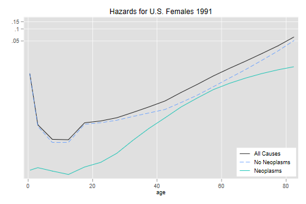
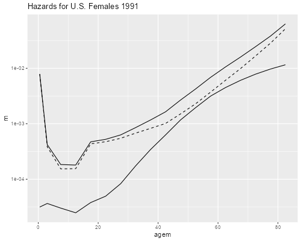

<h2 id="competing-risks">Competing Risks</h2>
<p>Let us work through the example in the textbook on multiple decrement
and associated single decrement life tables, see Boxes 4.1 and 4.2 on
pages 77 and 85.</p>
<p>Rather than just repeat all the calculations, however, I will
illustrate a simpler approach to cause-deleted tables, based on the
assumption that cause-specific hazards are constant within each age
interval. This approach gives almost the same results as the textbook,
yet allows us to concentrate on the underlying concepts.</p>
<p>We start by reading the data, which have deaths for all causes and
from neoplasms for U.S. females in 1991. I also include the
<em>l<sub>x</sub></em> and <em><sub>n</sub>a<sub>x</sub></em>
columns.</p>

{% include srtabs.html %}

<pre class='stata'>. set type double

. infile age D Di lx a using ///
>   https://grodri.github.io/datasets/preston41.dat, clear
(19 observations read)
</pre>
<pre class='r'>> url = "https://grodri.github.io/datasets/preston41.dat"
> b41 &lt;- read.table(url, header=FALSE)
> names(b41) &lt;- c("age","D","Di","lx","a")
</pre>
<h3 id="multiple-decrements">Multiple Decrements</h3>
<p>The first task is to estimate mortality due to neoplasms in the
presence of other causes. We start by estimating overall survival using
conventional life table techniques. Then we compute conditional
probabilities of death. (These usually would have been computed on the
way to <em>l<sub>x</sub></em>.)</p>
<p><span class="r">Many calculations need special handling for the first
or last entry. I take advantage that these are set to NA and encapsulate
the fix in a function <code>edit.na()</code></span></p>
<pre class='stata'>. gen q = 1 - lx[_n + 1]/lx
(1 missing value generated)

. replace q = 1 in -1
(1 real change made)
</pre>
<pre class='r'>> library(dplyr)
> edit.na &lt;- function(x, value) { x[is.na(x)] &lt;- value; x}
> b41 &lt;- mutate(b41, 
+   q = edit.na(1 - lead(lx)/lx, 1)) # so q[last]=1
</pre>
<p>The <em>conditional</em> probability of dying of a given cause given
survival to the age group is easy to obtain, we just multiply the
overall probability by the ratio of deaths of a given cause to all
deaths:</p>
<pre class='stata'>. gen qi = q * Di/D
</pre>
<pre class='r'>> b41 &lt;- mutate(b41, qi = q * Di/D)
</pre>
<p>The unconditional counts of deaths of any cause and of a given cause
are calculated multiplying by the number surviving to the start of each
age group, which is <em>l<sub>x</sub></em>. Recall that to die of cause
<em>i</em> in the interval <em>[x, x+n)</em> one must survive
<em>all</em> causes up to age <em>x</em>.</p>
<pre class='stata'>. gen d = lx * q

. gen di = lx * qi
</pre>
<pre class='r'>> b41 &lt;- mutate(b41, d = lx * q, di = lx * qi)
</pre>
<p>Let us print our results</p>
<pre class='stata'>. format %8.5f q qi

. format %8.0fc lx d di

. list age lx q qi d di

     ┌────────────────────────────────────────────────────┐
     │ age        lx         q        qi        d      di │
     ├────────────────────────────────────────────────────┤
  1. │   0   100,000   0.00783   0.00003      783       3 │
  2. │   1    99,217   0.00168   0.00015      167      14 │
  3. │   5    99,050   0.00092   0.00015       91      15 │
  4. │  10    98,959   0.00090   0.00012       89      12 │
  5. │  15    98,870   0.00236   0.00019      233      19 │
     ├────────────────────────────────────────────────────┤
  6. │  20    98,637   0.00262   0.00025      258      24 │
  7. │  25    98,379   0.00314   0.00041      309      41 │
  8. │  30    98,070   0.00425   0.00087      417      85 │
  9. │  35    97,653   0.00584   0.00171      570     167 │
 10. │  40    97,083   0.00818   0.00314      794     304 │
     ├────────────────────────────────────────────────────┤
 11. │  45    96,289   0.01330   0.00582    1,281     561 │
 12. │  50    95,008   0.02095   0.00963    1,990     915 │
 13. │  55    93,018   0.03371   0.01547    3,136   1,439 │
 14. │  60    89,882   0.05155   0.02191    4,633   1,969 │
 15. │  65    85,249   0.07669   0.02920    6,538   2,489 │
     ├────────────────────────────────────────────────────┤
 16. │  70    78,711   0.11552   0.03696    9,093   2,909 │
 17. │  75    69,618   0.17427   0.04439   12,132   3,091 │
 18. │  80    57,486   0.27363   0.05012   15,730   2,881 │
 19. │  85    41,756   1.00000   0.10212   41,756   4,264 │
     └────────────────────────────────────────────────────┘

. quietly sum(di)

. di r(sum)
21204.543
</pre>
<pre class='r'>> select(b41, lx, q, qi, d, di) # rounding!
       lx            q           qi     d         di
1  100000 0.0078300000 0.0000313041   783    3.13041
2   99217 0.0016831793 0.0001460632   167   14.49195
3   99050 0.0009187279 0.0001506849    91   14.92534
4   98959 0.0008993624 0.0001240697    89   12.27781
5   98870 0.0023566299 0.0001894838   233   18.73426
6   98637 0.0026156513 0.0002468693   258   24.35044
7   98379 0.0031409142 0.0004142078   309   40.74935
8   98070 0.0042520649 0.0008677315   417   85.09843
9   97653 0.0058369943 0.0017141651   570  167.39336
10  97083 0.0081785689 0.0031350391   794  304.35900
11  96289 0.0133037003 0.0058245125  1281  560.83648
12  95008 0.0209456046 0.0096319746  1990  915.11464
13  93018 0.0337139048 0.0154730071  3136 1439.26817
14  89882 0.0515453595 0.0219109626  4633 1969.40114
15  85249 0.0766929817 0.0291963905  6538 2488.96309
16  78711 0.1155238785 0.0369608321  9093 2909.22406
17  69618 0.1742652762 0.0443948299 12132 3090.67927
18  57486 0.2736318408 0.0501203389 15730 2881.21780
19  41756 1.0000000000 0.1021249119 41756 4264.32782
</pre>
<p>We obtain a total of 21,205 life table deaths due to neoplasms. Thus,
the probability that a female will die of this cause under the
age-cause-specific rates prevailing in the U.S. in 1991 is 21.2%. Can
you compute the probability that a woman who survives to age 50 will die
of neoplasms?</p>
<p>In preparation for the next part, note that if we had
<sub>n</sub>m<sub>x</sub> and we were willing to assume that the hazard
is constant in each age group we would have had a slightly different
estimate of the survival function. Let us “back out” the rates from the
probabilities:</p>
<pre class='stata'>. gen n = age[_n + 1] - age
(1 missing value generated)

. gen m = q/(n - q * (n - a))
(1 missing value generated)

. replace m = 1/a in -1
(1 real change made)
</pre>
<pre class='r'>> b41 &lt;- mutate(b41, n = c(diff(age),NA), 
+   m =  edit.na( q/(n - q * (n - a)), 1/tail(a,1))) # m[last] = 1/a[last]
</pre>
<p>With these rates we compute the cumulative hazard and survival as</p>
<pre class='stata'>. gen H = sum(n * m)

. gen S = 1

. replace S = exp(-H[_n - 1]) in 2/-1
(18 real changes made)
</pre>
<pre class='r'>> b41 &lt;- mutate(b41, H = cumsum(n * m), 
+   S = edit.na(exp(-lag(H)), 1)) # S[1] = 1
</pre>
<p>The result differs from the survival function in the text by less
than 0.1% in all age groups except the last two, where the difference is
0.2 and 0.6% respectively. I think this is a small price to pay for
simplicity.</p>
<h3 id="cause-deleted-life-tables-i">Cause-Deleted Life Tables (I)</h3>
<p>The next question is how female mortality would look if deaths due to
neoplasms could be avoided. The honest answer, of course, is that we
don’t know. But assuming independence of the underlying risks we can do
some calculations.</p>
<p>Let me start with the simpler approach assuming constant risks in
each age group. We compute cause-specific rates by dividing deaths of a
given cause into person-years of exposure, which is equivalent to
multiplying the overall rate by the ratio of deaths of a given cause to
the total. Here we want deaths for causes other than neoplasms. I will
use the subscript <em>d</em> for deleted:</p>
<pre class='stata'>. gen Rd = (D - Di)/D

. gen md = m * Rd
</pre>
<pre class='r'>> b41 &lt;- mutate(b41, Rd = (D - Di)/D,
+   md = m * Rd)
</pre>
<p>Then we construct a survival function in the usual way, but treating
this hazard as if it was the only one operating:</p>
<pre class='stata'>. gen Hd = sum(n * md)

. gen Sd = 1

. replace Sd = exp(-Hd[_n-1]) in 2/-1
(18 real changes made)
</pre>
<pre class='r'>> b41 &lt;- mutate(b41, Hd = cumsum(n * md), 
+   Sd = edit.na(exp(-lag(Hd)), 1)) # Sd[1] = 1
</pre>
<p>That’s it. Really. We take a hazard that represents a subset of
causes and build a life table from it. If the hazard is constant within
each age group we can also compute person-years lived at each age quite
easily</p>
<pre class='stata'>. gen Pd = (Sd-Sd[_n+1])/md
(1 missing value generated)

. replace Pd = Sd/md in -1
(1 real change made)

. quietly sum Pd

. di r(sum)
82.391779
</pre>
<pre class='r'>> b41 &lt;- mutate(b41, 
+   Pd =  edit.na((Sd - lead(Sd))/md, tail(Sd/md, 1)))
> sum(b41$Pd)
[1] 82.39178
</pre>
<p>So if neoplasm deaths could be avoided, female life expectancy at
birth would be 82.4 years, under the strong (and untestable) assumption
of independence of the competing causes.</p>
<p>You might be interested to see the shape of the overall,
cause-specific, and cause-deleted hazards:</p>
<pre class='stata'>. gen agem = age + n/2
(1 missing value generated)

. gen mi = m - md // rate for neoplasms

. line m md mi agem, xtitle(age) yscale(log) ///
>   lp(solid dash solid) ///
>   title("Hazards for U.S. Females 1991") ///
>   legend(order(1 "All Causes" 2 "No Neoplasms" 3 "Neoplasms") ///
>   ring(0) pos(5) cols(1))

. graph export usf91neo.png, width(500) replace
file usf91neo.png saved as PNG format
</pre>
<p></p>
<pre class='r'>> bx &lt;- mutate(b41, agem = age + n/2, mi = m - md)[-nrow(b41), ]
> library(ggplot2)
> ggplot(bx, aes(agem, m)) + geom_line() + scale_y_log10() +
+   geom_line(aes(agem, md), linetype="dashed") + 
+   geom_line(aes(agem, mi)) + ggtitle("Hazards for U.S. Females 1991")
> ggsave("usf91neor.png", width=500/72, height=400/72, dpi=72)
</pre>
<p></p>
<h3 id="cause-deleted-life-tables-ii">Cause-Deleted Life Tables
(II)</h3>
<p>Let us review the alternative approach used in the textbook. The
authors use Chiang’s method, which assumes proportionality of
cause-specific hazards within an age group (weaker than the constant
risk assumption). We compute the conditional probability of surviving an
age group after deleting a cause as the overall probability raised to
<em>R<sub>d</sub></em>, and then calculate the survival function as a
cumulative product</p>
<pre class='stata'>. gen pd = (1 - q)^Rd

. gen ld = 100000

. replace ld = ld[_n-1] * pd[_n-1] in 2/-1
(18 real changes made)
</pre>
<pre class='r'>> b41 &lt;- mutate(b41, pd = (1 - q)^Rd,
+   ld = 100000 * cumprod(c(1, pd[-length(pd)])))
</pre>
<p>The cause-deleted survival functions computed by the two methods
differ by less than 0.1% at all ages except the last two, where the
differences are 0.2% and 0.5%, respectively.</p>
<p>To compute time lived we need the <em><sub>n</sub>a<sub>x</sub></em>
factors. The text uses the Taylor series method for ages 0, 1, 5, and
80, and a quadratic interpolation formula from 10 to 75. Let’s do
that:</p>
<pre class='stata'>. gen dd = ld - ld[_n+1] // deaths after cause-deletion
(1 missing value generated)

. replace dd = ld in -1
(1 real change made)

. gen qd = dd/ld

. gen ad = a/Rd in -1
(18 missing values generated)

. // Equation 4.8:
. replace ad = n + Rd * (q/qd) * (a - n) /// 
>   if age &lt; 10 | age==80   
(4 real changes made)

. // Equation 4.6:
. replace ad =( (-5/24) * dd[_n - 1] + 2.5*dd + (5/24) * dd[_n + 1] )/dd ///
>   if age >= 10 &amp; age &lt;= 75
(14 real changes made)
</pre>
<pre class='r'>> b41 &lt;- mutate(b41, 
+   dd = edit.na(ld - lead(ld), tail(ld,1)),
+   qd = dd/ld,
+   ad = ifelse(age &lt; 10 | age == 80, 
+     n + Rd * (q/qd) * (a - n), 
+       ifelse(age >= 10 &amp; age &lt;= 75, 
+       ((-5/24) * lag(dd) + 2.5 * dd + (5/24) * lead(dd) )/dd, 
+       a/Rd)))
</pre>
<p>We can then compute time lived and life expectancy:</p>
<pre class='stata'>. gen Ld = dd * ad + (ld - dd) * n
(1 missing value generated)

. replace Ld = ld * ad in -1
(1 real change made)

. quietly summarize Ld

. di r(sum)/100000
82.457483
</pre>
<pre class='r'>> b41 &lt;- mutate(b41, 
+   Ld = edit.na(dd * ad + (ld - dd) * n,  tail(ld * ad, 1))) 
> summarize(b41, e0 = sum(Ld)/100000)
        e0
1 82.45748
</pre>
<p>We get 82.46 years, in agreement with the text, and very close to the
82.39 computed using the simpler approach.</p>
<p>We now compute life expectancy at every age and print the “official”
cause-deleted life table.</p>
<pre class='stata'>. gen Td = r(sum) - sum(Ld) + Ld

. gen ed = Td/ld

. format %8.6f Rd

. format %5.3f a ad

. format %5.2f ed

. format %8.0fc lx ld

. list age Rd lx a ld ad ed

     ┌────────────────────────────────────────────────────────────┐
     │ age         Rd        lx       a        ld      ad      ed │
     ├────────────────────────────────────────────────────────────┤
  1. │   0   0.996002   100,000   0.152   100,000   0.152   82.46 │
  2. │   1   0.913222    99,217   1.605    99,220   1.605   82.10 │
  3. │   5   0.835985    99,050   2.275    99,068   2.275   78.23 │
  4. │  10   0.862047    98,959   2.843    98,992   2.875   73.29 │
  5. │  15   0.919595    98,870   2.657    98,915   2.653   68.34 │
     ├────────────────────────────────────────────────────────────┤
  6. │  20   0.905618    98,637   2.547    98,700   2.548   63.48 │
  7. │  25   0.868125    98,379   2.550    98,467   2.577   58.63 │
  8. │  30   0.795927    98,070   2.616    98,198   2.585   53.78 │
  9. │  35   0.706327    97,653   2.677    97,866   2.582   48.96 │
 10. │  40   0.616676    97,083   2.685    97,462   2.637   44.15 │
     ├────────────────────────────────────────────────────────────┤
 11. │  45   0.562189    96,289   2.681    96,969   2.672   39.36 │
 12. │  50   0.540143    95,008   2.655    96,242   2.695   34.64 │
 13. │  55   0.541050    93,018   2.647    95,148   2.703   30.00 │
 14. │  60   0.574919    89,882   2.646    93,399   2.695   25.51 │
 15. │  65   0.619308    85,249   2.631    90,600   2.696   21.22 │
     ├────────────────────────────────────────────────────────────┤
 16. │  70   0.680059    78,711   2.628    86,231   2.686   17.16 │
 17. │  75   0.745246    69,618   2.618    79,325   2.676   13.42 │
 18. │  80   0.816833    57,486   2.570    68,776   2.637   10.07 │
 19. │  85   0.897875    41,756   6.539    52,969   7.283    7.28 │
     └────────────────────────────────────────────────────────────┘
</pre>
<pre class='r'>> b41 &lt;- mutate(b41, Td = sum(Ld) - cumsum(Ld) + Ld, ed = Td/ld)
> select(b41, Rd, lx, a, ld, ad, ed)
          Rd     lx     a        ld        ad       ed
1  0.9960020 100000 0.152 100000.00 0.1520133 82.45748
2  0.9132218  99217 1.605  99220.12 1.6051750 82.10441
3  0.8359853  99050 2.275  99067.59 2.2752054 78.22835
4  0.8620470  98959 2.843  98991.50 2.8753672 73.28673
5  0.9195954  98870 2.657  98914.75 2.6526438 68.34137
6  0.9056184  98637 2.547  98700.37 2.5482565 63.48405
7  0.8681251  98379 2.550  98466.54 2.5765317 58.62875
8  0.7959270  98070 2.616  98197.99 2.5847700 53.78204
9  0.7063274  97653 2.677  97865.51 2.5824632 48.95597
10 0.6166763  97083 2.685  97461.68 2.6369136 44.14812
11 0.5621885  96289 2.681  96969.36 2.6723714 39.35888
12 0.5401434  95008 2.655  96241.98 2.6945692 34.63615
13 0.5410497  93018 2.647  95147.84 2.7030360 30.00346
14 0.5749188  89882 2.646  93398.60 2.6949490 25.51476
15 0.6193082  85249 2.631  90599.70 2.6959050 21.21973
16 0.6800589  78711 2.628  86231.38 2.6864399 17.15811
17 0.7452457  69618 2.618  79324.76 2.6757623 13.41813
18 0.8168329  57486 2.570  68775.62 2.6367747 10.06584
19 0.8978751  41756 6.539  52969.13 7.2827502  7.28275
</pre>
<p>How much would a woman’s life expectancy at 40 change if neoplasm
deaths were eliminated, assuming again independence of the underlying
risks?</p>
